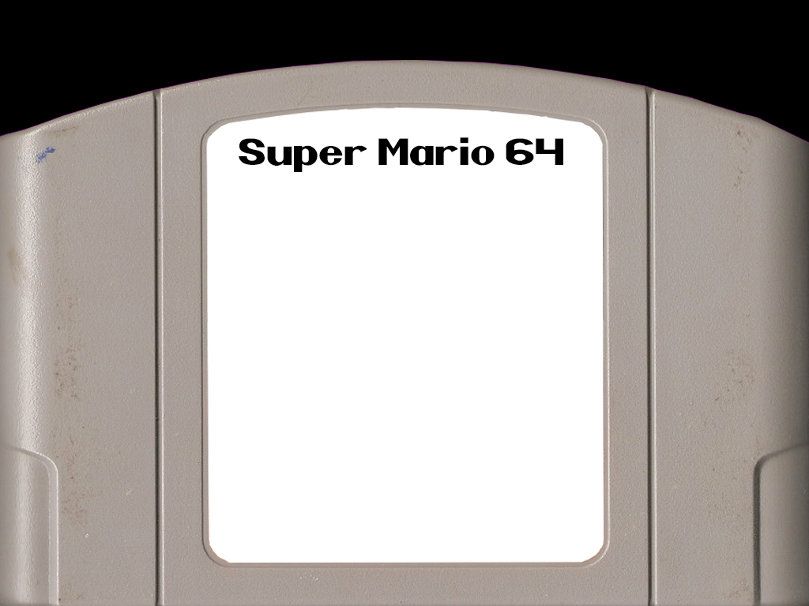
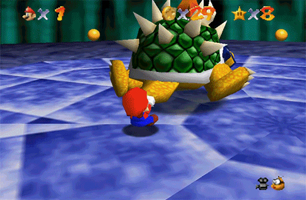
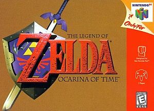
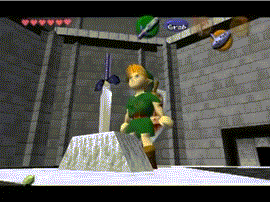
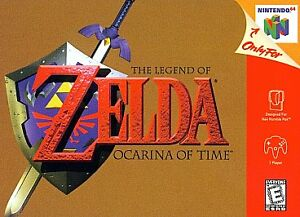
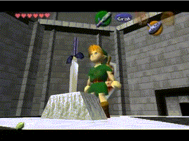
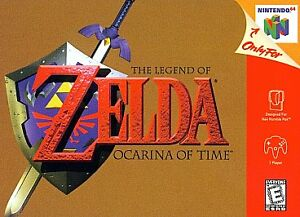
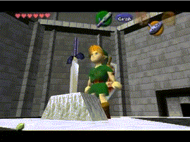

 
Super Mario 64 is a platform video game for the Nintendo 64, and the first in the Super Mario series to feature three-dimensional gameplay. The player explores Princess Peach's castle and must rescue her from Bowser.
More like this




 


